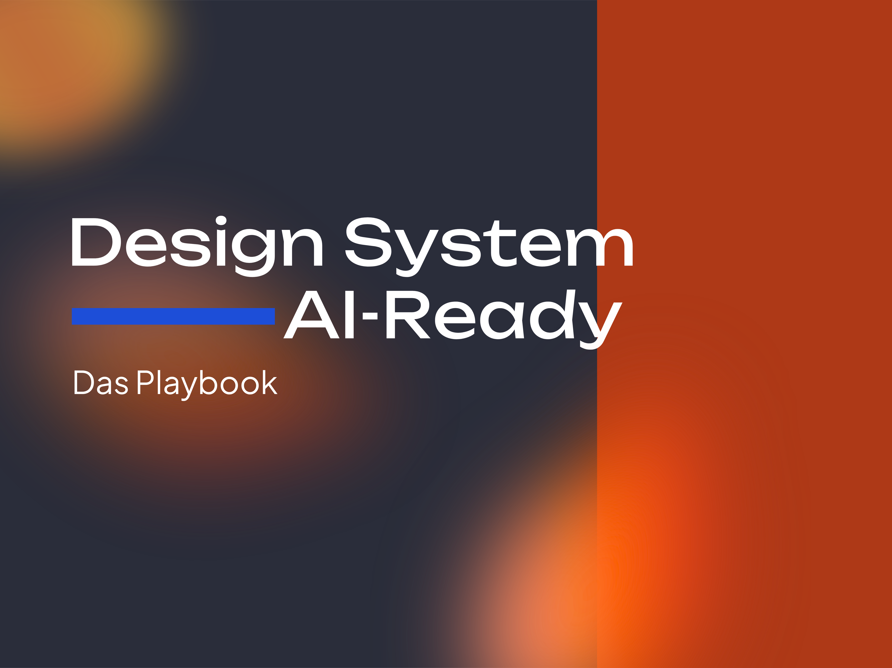

Tokens
Design System, AI-Ready
KI-Tools ignorieren eure Design Guidelines und erfinden eigene Werte? Im Deep Dive sagen wir Inkonsistenz und Chaos durch KI den Kampf an.
Jetzt Kennenlern-Gespräch buchenTermin buchen
KI-Tools ignorieren eure Design Guidelines und erfinden eigene Werte? Im Deep Dive sagen wir Inkonsistenz und Chaos durch KI den Kampf an.
Jetzt Kennenlern-Gespräch buchenTermin buchen
Auch Figma MCP ist nicht allmächtig. Ohne klare Prinzipien neigt KI schnell dazu, neue Werte zu erfinden oder aus eurem System auszubrechen – statt das zu nutzen, was schon da ist. Was für euer Team selbsterklärend ist, bleibt für ein KI-Tool oft uneindeutig.
Ohne klare Prinzipien erfindet die KI neue Werte, statt bestehende zu nutzen.
Was für Menschen selbsterklärend ist, bleibt für KI-Tools uneindeutig.
Eine Anleitung, die euer Team versteht, ist für ein KI-Tool schnell zu viel.
Genau darum geht es in unserem Deep Dive. Wir schauen uns eure Tokens, Variablen, Doku und Tools an und identifizieren, was es braucht, damit KI euer Design System konsistent versteht und anwendet, statt zu raten.

Im Briefing-Call haben wir Stand und Herausforderungen erörtert: Wie sind eure Tokens aufgebaut, wie ist die Doku, welche Tools nutzt ihr. Der Fokus für den Deep Dive steht damit schon – Tiefe und Themen richten sich nach eurer Problematik.
Wir gehen gemeinsam durch, wie eure Tokens, Variablen und Components aufgebaut sind und wo KI-Tools aktuell noch raten müssen statt zu wissen.
Aus dem Check wird ein Plan, wie KI-Tools zuverlässig interpretieren können.
Board mit priorisierten nächsten Schritten + Playbook zur konsistenten KI-Anwendung eures Design Systems.
Skalieren mit KI geht in beide Richtungen: Ordnung oder Chaos. Wenn euer Design System nicht zusätzlich für KI mitgedacht wird, verschenkt ihr nicht nur Potenzial – ihr macht KI zum Brandbeschleuniger für genau das Chaos, das ihr eigentlich vermeiden wolltet.
Nein. Wir arbeiten an eurem Design System – keine Show, sondern Arbeit an eurem Fall.
Es hilft, wenn ihr eure Tokens, Doku und genutzten Tools mitbringt (zum Beispiel über Figma) – darauf gehen wir im Deep Dive ein.
Ja, hier schauen wir uns euer bestehendes System an, deshalb ist Einblick in eure Tokens und Doku nötig.
Für Design Teams, die KI-Tools produktiv nutzen wollen und merken, dass ihr Design System dafür noch nicht bereit ist.
Ja, ich biete den Deep Dive ausschließlich remote an.
Ich werde Figjam und Figma nutzen, ihr bekommt dazu von mir einen Einladungslink.